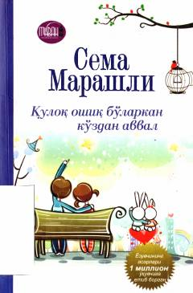

QOErkak va ayol munosabatlari hamda oilaviy baxt haqidagi ibratli hikoyalar to'plami.
Turk yozuvchisi Sema Marashlining ushbu asari erkak va ayol o'rtasidagi munosabatlar, oilaviy hayot va sevgi mavzulariga bag'ishlangan. Kitobda muallif turli hikoyalar orqali insoniy tuyg'ular va o'zaro tushunishning ahamiyatini yoritib beradi.